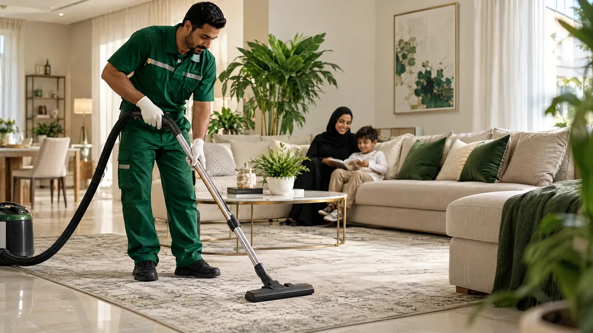

مقدمة: شركة تنظيف في الرياض
في مدينة الرياض، تتنوع المساكن بين الشقق القريبة من مراكز الأعمال والفلل في الأحياء السكنية والمنازل التي تستقبل أفراد الأسرة والضيوف باستمرار. ومع إيقاع الحياة السريع، قد تتراكم الأتربة على الأسطح والأرضيات وتحتاج المطابخ والحمامات إلى عناية منتظمة. لذلك تساعد خطة تنظيف واضحة على توزيع الأعمال حسب الأولوية بدل تأجيلها حتى تصبح مرهقة. إذا كنت تبحث عن شركة تنظيف في الرياض، فإن تنظيف وصيانة خدمات منزلية تقدم لك تصورًا منظمًا لخدمات التنظيف الشامل بحسب احتياج العقار. الهدف هو الوصول إلى بيئة أكثر ترتيبًا وراحة عبر تحديد نطاق العمل مسبقًا، واختيار الطريقة المناسبة لكل سطح، والاهتمام بالتفاصيل التي قد لا يغطيها التنظيف اليومي. ويمكن أن تشمل الخدمة تنظيف الأرضيات والأسطح والمطابخ والحمامات والمداخل والنوافذ من الداخل، وفق الاتفاق عند الحجز.
احتياجات التنظيف في الرياض
تختلف احتياجات التنظيف في الرياض من منزل إلى آخر، كما تختلف بين أحياء المدينة والمناطق المحيطة بها مثل الرياض والدرعية والخرج والمزاحمية. وتؤثر مساحة العقار وعدد الغرف والحمامات وحجم الاستخدام اليومي في الوقت المطلوب ونطاق الخدمة. ومن المهم عدم افتراض أن جميع المنازل تحتاج إلى الخطوات نفسها؛ فالشقة التي تُستخدم طوال الأسبوع تختلف عن فيلا كبيرة أو منزل يستعد للانتقال. لذلك نوصي بوصف الحالة بوضوح عند طلب الخدمة حتى يمكن ترتيب الأولويات بصورة واقعية. وبسبب اختلاف حجم العقارات في الرياض، من المفيد تقسيم العمل إلى مناطق واضحة: المجالس وغرف المعيشة، ثم غرف النوم، ثم المطبخ والحمامات، وأخيرًا المداخل والأرضيات. هذا الترتيب يقلل انتقال الأتربة إلى المناطق التي انتهى تنظيفها. وفي الفلل متعددة الطوابق، يساعد تحديد الأولويات قبل بدء العمل على تجنب استهلاك الوقت في منطقة واحدة وترك أخرى دون إكمال.
لماذا تحتاج إلى تنظيف شامل؟
في الرياض، حوّل فكرة التنظيف الشامل إلى نطاق مكتوب: ابدأ بـتخطيط تنظيف الفيلا متعددة المناطق، ثم حدّد الغرف التي تحتاج معالجة كاملة، والبنود التي يمكن تأجيلها إلى زيارة مستقلة. بهذه الطريقة تصبح النتيجة قابلة للمراجعة بدل أن تعتمد على الانطباع العام.
تنظيف المطابخ بطريقة عملية
المطبخ من أكثر أجزاء المنزل في الرياض تعرضًا للدهون وبقايا الطعام، لذا يستحق عناية خاصة. يُفضّل البدء بإزالة الأغراض المتناثرة، ثم تنظيف الأسطح الخارجية للخزائن ومقابضها، ومسح سطح العمل، ومعالجة الدهون حول الموقد وفق تعليمات المنتج المناسب. ويُنظف الحوض والصنبور ثم تُجفف المنطقة لتقليل آثار الماء. أما داخل الأجهزة والخزائن فيُتعامل معه حسب الاتفاق وحالة المكان، مع تجنب المواد الكاشطة على الأسطح اللامعة أو الحساسة. كما ينبغي عدم خلط المنظفات، خصوصًا المنتجات التي قد تتفاعل مع بعضها.
العناية بالحمامات
أما الحمام في الرياض فالأفضل أن يُعامل كمنطقة مستقلة في الخطة. رتّب الحوض والمرايا والصنابير ومنطقة الاستحمام بحسب حالتها، وافصل أدواتها عن أدوات بقية المنزل، ثم اترك وقتًا كافيًا للتجفيف قبل إعادة الاستخدام.
الأرضيات والأثاث والمفروشات
اختيار طريقة الأرضيات في الرياض يبدأ من الخامة لا من اسم المنتج. سجّل نوع السطح في طلب الخدمة، واذكر إن كانت هناك بقع أو فواصل حساسة، واطلب اختبارًا محدودًا قبل تعميم أي مادة أو كمية ماء.
النوافذ والمداخل والزوايا
تؤثر النوافذ والمداخل في الانطباع الأول عن المنزل في الرياض، كما أنها من الأماكن التي قد تجمع الغبار بسرعة. يُنظف إطار النافذة أولًا ثم الزجاج بأداة مناسبة، مع تجنب التنظيف تحت أشعة الشمس القوية إذا كان ذلك يؤدي إلى جفاف المنظف بسرعة وظهور خطوط. وتُمسح الأبواب والمقابض ومفاتيح الإضاءة بلطف وبمنتج مناسب، دون رش السوائل مباشرة على الأجزاء الكهربائية. كما ينبغي عدم إغفال حواف الجدران والزوايا والمساحات خلف الأثاث التي يصعب الوصول إليها أثناء التنظيف اليومي.
كيف تختار شركة تنظيف مناسبة؟
إذا قارنت عروض التنظيف في الرياض، حوّل المقارنة إلى بنود: عدد الغرف، الأدوات، المفروشات، النوافذ، ووقت المراجعة. العرض الواضح ليس بالضرورة الأطول، لكنه يترك مساحة أقل للاختلاف حول ما تم الاتفاق عليه.
التحضير قبل وصول فريق التنظيف
يمكن تجهيز المنزل في الرياض بطريقة بسيطة تجعل وقت الخدمة أكثر فاعلية. اجمع الأغراض الشخصية والأوراق المهمة والمقتنيات الصغيرة في مكان آمن، وحدد القطع التي تحتاج إلى عناية خاصة، وأخبر الفريق عن أي سطح حساس أو بقعة قديمة أو مشكلة تسرب. إذا كانت هناك غرف لا ترغب في دخولها، وضّح ذلك من البداية. كما يساعد تحديد الأولويات، مثل تنظيف المطبخ بعمق أو التركيز على المجالس، في توزيع الوقت حسب احتياج الأسرة. لا حاجة إلى تنظيف المنزل قبل الخدمة؛ يكفي إخلاء الأسطح قدر الإمكان وتوضيح المطلوب.
جدول يحافظ على النظافة
للمحافظة على نتيجة التنظيف في الرياض، اربط العناية اليومية بنوع المنزل: مهمة قصيرة بعد الاستخدام، ومهمة أسبوعية لمنطقة واحدة، ومهمة شهرية للمناطق المرتفعة أو الأقل استعمالًا. لا تجمع كل البنود في يوم واحد إذا كان ذلك سيؤخر الأساسيات.
السلامة واختيار مواد التنظيف
في دليل الرياض، السلامة جزء من جودة التنظيف وليست خطوة لاحقة. اختر المنتج بحسب السطح، افتح التهوية، واحفظ العبوات بعيدًا عن الأطفال، ولا تخلط مواد مختلفة حتى لو بدا أن البقعة تحتاج قوة أكبر.
خدمات تناسب المنازل المختلفة
قد تحتاج الشقة الصغيرة إلى تنظيف مركز يركز على المطبخ والحمام والأرضيات، بينما تتطلب الفيلا تقسيم العمل إلى أدوار وغرف ومجالس ومداخل. أما المنزل في الرياض الذي يستعد للانتقال أو لاستقبال الضيوف فقد يحتاج إلى ترتيب الأولويات وتنظيف التفاصيل التي لا تُعالج عادة في الروتين اليومي. لهذا من الأفضل وصف نوع العقار ومساحته التقريبية وعدد الحمامات والغرف عند طلب السعر، مع تحديد ما إذا كانت الخدمة تشمل الشرفات أو النوافذ الخارجية أو تنظيف المفروشات. كلما كانت المعلومات أوضح، كان تقدير الوقت والنطاق أدق.
ماذا تتوقع من الخدمة؟
قبل ترتيب زيارة في الرياض، اكتب المطلوب في ثلاث خانات: ما يجب إنجازه، ما يحتاج تقييمًا، وما يمكن تأجيله. أرسل وصفًا مختصرًا وصورة عند الحاجة، ثم راجع القائمة بعد انتهاء البنود الأساسية.
أسئلة شائعة حول التنظيف الشامل
كم يستغرق تنظيف المنزل في الرياض؟ يعتمد الوقت على المساحة وعدد الغرف والحمامات ودرجة الاتساخ والخدمات المطلوبة، لذلك يُفضّل تقديم تفاصيل المنزل للحصول على تقدير أقرب للواقع. هل يشمل السعر تنظيف الكنب والسجاد؟ يجب تأكيد ذلك عند الحجز لأن تنظيف المفروشات قد يكون خدمة مستقلة. هل يلزم وجود صاحب المنزل؟ يمكن الاتفاق مسبقًا على آلية الدخول والتواصل بما يحفظ الخصوصية والأمان. هل يمكن طلب تنظيف جزء محدد؟ نعم، يمكن توضيح الأولويات قبل الموعد لمعرفة مدى إمكانية تنفيذها ضمن الوقت المتاح. هل تستخدمون مواد مناسبة للأسطح؟ ينبغي سؤال الشركة عن المواد وطريقة التعامل مع الخامات الحساسة قبل بدء العمل.
خدمات التنظيف الشامل التي يمكن طلبها
يمكن تنسيق خدمة تنظيف شاملة في الرياض وفق قائمة واضحة تشمل إزالة الغبار عن الأسطح والأثاث، وتنظيف الأرضيات بحسب نوعها، والعناية بالمطبخ والحمامات، ومسح الأبواب والمقابض، وتنظيف النوافذ من الداخل عند الاتفاق.
نصائح خاصة لسكان الرياض
وتذكر أن أي مشكلة صيانة مثل التسرب أو تلف الفواصل تحتاج إلى معالجة السبب بواسطة المختص، لأن التنظيف وحده لا يصلح الأعطال. هذا التفصيل جزء من زاوية تخطيط تنظيف الفيلا متعددة المناطق في الرياض، لذلك لا يُقرأ بمعزل عن بقية خطوات المقال.
لماذا تتواصل مع تنظيف وصيانة خدمات منزلية؟
اختيار تنظيف وصيانة خدمات منزلية لخدمات التنظيف في الرياض يبدأ بتواصل واضح حول نوع العقار والخدمات المطلوبة والوقت المناسب. عند طلب الخدمة، اذكر المساحة التقريبية وعدد الغرف والحمامات ونوع الأرضيات وأي تفاصيل مهمة، مثل وجود أسطح حساسة أو بقع قديمة. تساعد هذه المعلومات في تحديد نطاق عمل أقرب إلى احتياجك. لا تتردد في السؤال عن الأعمال المشمولة والمواد المستخدمة وأي رسوم إضافية قبل تأكيد الموعد؛ فالوضوح من البداية يجعل تجربة الخدمة أسهل وأكثر تنظيمًا.
اطلب خدمة تنظيف في الرياض
إذا كنت تريد منزلًا مرتبًا ومهيأً للاستخدام اليومي، تواصل مع تنظيف وصيانة خدمات منزلية للاستفسار عن خدمة التنظيف الشامل في الرياض والمناطق القريبة ضمن منطقة الرياض. حدّد نوع العقار والخدمات التي ترغب بها، وسنساعدك في ترتيب الطلب وفق المعلومات المتاحة ونطاق التغطية الفعلي. يمكن أن تكون الزيارة مناسبة للتنظيف الدوري أو قبل استقبال الضيوف أو بعد الانتقال، مع ضرورة تأكيد التفاصيل والموعد والتكلفة قبل بدء العمل. اتخذ الخطوة الأولى الآن: جهّز قائمة مختصرة بأولوياتك واطلب عرضًا يناسب احتياج منزلك.
دعوة للتواصل: للاستفسار عن التنظيف الشامل في الرياض، تواصل مع تنظيف وصيانة خدمات منزلية واذكر مساحة العقار والخدمات المطلوبة للحصول على تفاصيل أوضح.
تنبيه بشأن التغطية: هذا المحتوى إرشادي؛ يرجى التواصل للتأكد من توفر الخدمة في الرياض والتفاصيل قبل الحجز، ومراجعة نطاق التغطية الفعلي.
زاوية عملية: تخطيط تنظيف الفيلا متعددة المناطق
يأخذ هذا الدليل في الرياض مسارًا مختلفًا عن الأدلة العامة؛ فهو يرتب الخطوات حول تخطيط تنظيف الفيلا متعددة المناطق، ويقترح كتابة نطاق واضح ومراجعة البنود قبل اعتبار الزيارة مكتملة.